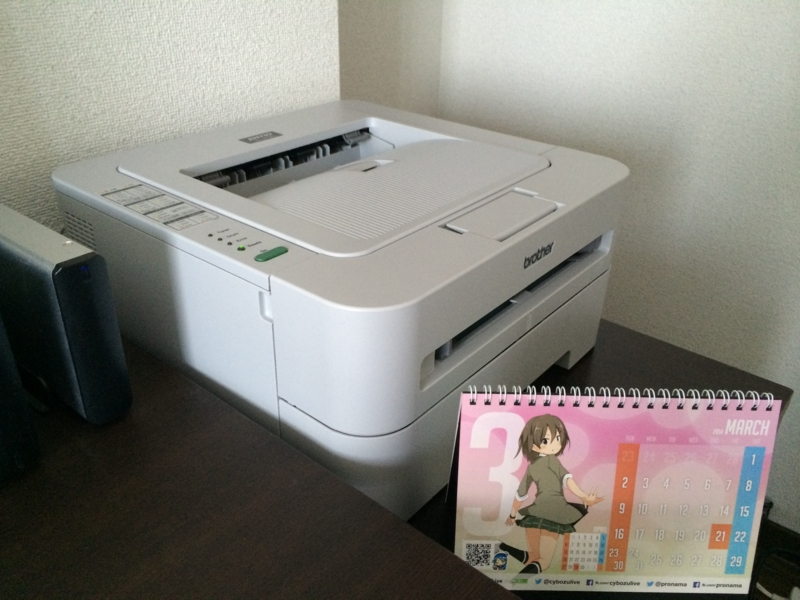

ブラザーのモノクロレーザープリンターを買ったった。
公開日：

BROTHER A4モノクロレーザープリンター JUSTIO 20PPM HL-2130
- 出版社/メーカー: ブラザー工業
- 発売日: 2011/11/12
- メディア: Personal Computers
- クリック: 8回
- この商品を含むブログ (5件) を見る
自分は割りと誤字脱字が多い。棒読みちゃんでテキストを読み上げてみるなどの対策をとってみたけれど、なに言ってるのかさっぱりわからず、かえって誤字脱字が増える。そこで、やはり原稿を紙に印刷して校正しようと思い、プリンターを買うことにした。どうせテキストしか印刷しないので、今回はモノクロレーザープリンターをチョイス。インクジェットのカラープリンターは肝心な時に黒のインクばっかりなくなるからイヤだ、キライだ。あと、ブラザーは語感がブラジャーっぽいのがいい。

7,000円しなかった。最近の子は安いなぁ。大きさは、キャビネットに載せてちょうどいい感じ（46.5 x 45 x 32 cm）。
ちょっと動作音がやかましいけれど、個人的には許せるレベル。Windows 8.1 で使っているが、ドライバーのインストールも不要みたいで、USB ケーブルをつないで電源を入れるだけで使い始めることができた。今のところ使っていて不満はまったく感じない。
ただ、USB ケーブルが付属していないのと、最初についてくるトナーがお試し程度の残量しかないということだけ注意が必要かもしれない。

BROTHER JUSTIO A4モノクロレーザープリンタ HL-2270DW
- 出版社/メーカー: ブラザー工業
- 発売日: 2010/11/30
- メディア: Personal Computers
- 購入: 4人 クリック: 12回
- この商品を含むブログ (2件) を見る
あとで知ったのだけど、12,500 円するこちらを買っていれば両面印刷に無線 LAN 機能がついていたようだ。んー、ちょっと奮発してこっちでもよかったかなぁ？ まぁ、両面印刷機能は多分使わないし、無線のプリントサーバーも 5,000 円程度で手に入るみたいだから致命的な問題ではないが……。そもそも原稿はデスクトップでしか書かないし。ノートパソコンで書ける人、ちょっと尊敬する。
ちなみに、原稿を紙で印刷してみても、誤字脱字はほとんど減らなかった。ウェブのテキストを読み漁っていると、細かい文法のミスやタイポは日常茶飯事。日頃からそういうのを高速で脳内補正しながら読む癖がついてしまっているようで、間違いが目に留まらないのだ。あと、自分はよく右と左を間違えたり、言い間違えたり、考えていることと違うことを入力していることがよくある。そもそも脳みそが構造的におかしいのかもしれぬ。
というわけで、誤字脱字の訂正に関しては編集部の頑張りに期待したい。自分は自分で、短所を直すより、長所を伸ばすことにする。